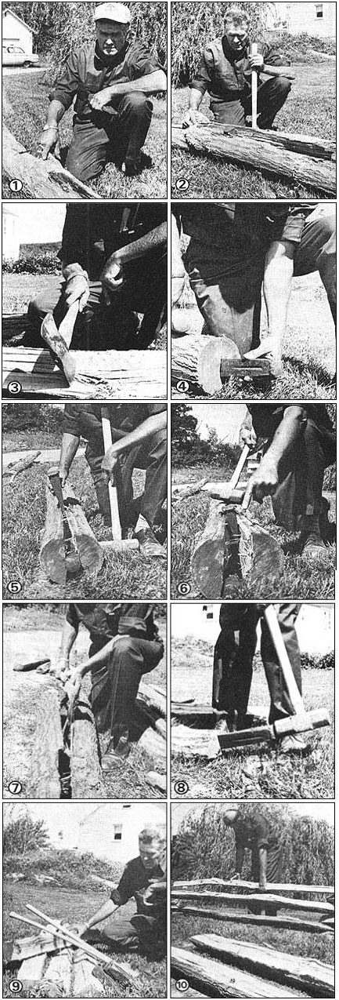

Nobody was more surprised than Paul Leaf (me) that spring day in Tell City, Indiana. More or less on a spur-of-the-moment lark, I had just entered a rail-splitting contest. And suddenly-after busting a 12-foot-long sassafras log into four rails in just 60 seconds flat-I found myself being awarded the competition's first prize! I guess it just goes to show that once you learn something, that knowledge and the feel of it become a part of you for as long as you live.
I learned to split rails for fence-posts and firewood when I was a farm boy in Iowa more years ago than I now like to remember. It was a good thing to know then and it's a good skill to have now in this age of "getting back" to the old-time basics of living.
The "tools of the log-splitting trade" are relatively simple and inexpensive: an axe, an eight-pound mall (sledgehammer), and three or four 2-1/2- to 4-pound wedges.
If you want to end up with fine, straight rails ... you've got to start with good, straight trees or logs that are as knot-free as possible. And-although almost any hardwood will make a good post-hickory, elm, and cottonwood rot out faster than the others and, for that reason, you should avoid using them for rails. Oak, walnut, butternut, and locust are your very best bets.
To begin at the beginning with your rail splitting, you'll want to fell a tree that's about nine to twelve inches in diameter at its base. Then cut away the top and trim the branches off smooth and snug against the tree's trunk so that you're left with as straight and clean a log as possible.
Look your unsplit timber over for knots (Fig. 1) and, if you can, turn it so you won't have to drive your wedges directly through one of the tough and probably twisted spots. Knots will give you more trouble than anything else in this job (they tend to make a rail split out crooked) and, if you can't avoid them completely, be sure to plan your work so that you go straight through the center of any you encounter (Figs. 2 and 3).
Now start one of your wedges in the exact center of the butt end of the log and placed vertically so it'll crack the tree trunk "up and down" and not "back and forth" (Fig. 4). Tap the wedge in easy (until it sticks) with either the mall or one of your other wedges (no real woodsman ever uses an axe to drive a metal wedge).
Once the wedge is stuck tightly enough to stay where you want it, use straight, square blows with the mall to drive the tapered chunk of metal all the way up to its rim in the wood. This should open a crack about two feet long in the end of the log.
Now leave that first wedge right where it is (it's stuck anyway) and start a second one as far down the opened crack as you can (Fig. 5). A few good blows of the mall should drive the rim of this wedge almost down to the wood . . . thereby opening the original crack another two or three feet and, in the process, freeing the tapered splitter (Fig. 6). If it doesn't, roll the log over and drive yet a third wedge into the other side of the crack at roughly the spot where the second slab of metal was pounded in (just make sure that Wedge No. 3 misses No. 2).
When the first wedge has fallen free, pick it up, leapfrog it past the second (and, if it was used, the third) wedge, and use it to split the crack yet another two or three feet down the log . . . and so on, until the tree trunk falls apart in two halves. If a few splinters and webs of wood still connect the halves together, use your axe to cut the two sections of log apart (Fig. 7).
It's now a simple matter to lay one of the half-trunks on the ground with its bark side up, tap a wedge into its end (just as you tapped a wedge into the end of the whole log in the beginning) as shown in Fig. 8, and-using a second and third wedge as necessary-open a split from one end of the piece of wood to the other. Repeat the procedure with the second half-trunk ... and you should have four equal-sized, straight rails (Fig. 9) to work with. Congratulations!
To sum up, then: There's nothing to splitting out serviceable rails. Start with good, straight logs of hardwood that'll last . . . check each tree trunk for knots . . . plan your work to miss the knots you find and-when you absolutely can't work around them-split the knots that you have to split right through their centers.
One final tip: It's been my experience that fresh-cut trees split the best. But, fresh-cut or old logs, the knack of turning one tree trunk into four rails is as much "feel" as anything else and isn't too difficult to learn. Give it a try. And, once you've put up your first split-rail fence (Fig. 10), you'll probably figure that the "old-time" skill of splitting rails is still worth taking the time to learn.
|
 PHOTOS BY SUZANNE LEAF |
|
|